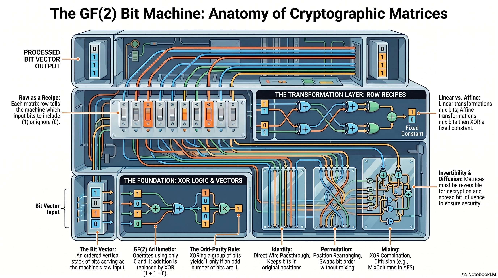

Learning objectives
- Interpret any matrix row as a bit recipe: a 1 selects that input position for XOR, a 0 ignores it.
- Carry out matrix-vector multiplication over \(\mathrm{GF}(2)\) row by row, treating each row as an independent XOR computation.
- Distinguish a linear transformation \(y=Av\) from an affine transformation \(y=Av\oplus c\), and explain the algebraic consequence of adding the constant.
- Identify identity, permutation, and general mixing matrices and predict how each type rearranges or combines the bits of an input vector.
- State the invertibility condition \(A^{-1}A=I\) and explain why only invertible matrices can appear in layers that must be reversed during decryption.
- Connect the AES S-box affine layer to the matrix formula \(s=Ab\oplus c\), naming the 8×8 circulant matrix and the constant \(c=\texttt{0x63}\).
Why this tutorial exists
AES and many other ciphers use structured bit mixing. The AES S-box affine transformation, MixColumns, linear diffusion layers, and many toy cipher components can all be described using vectors and matrices. This tutorial explains what matrices mean when the only numbers allowed are 0 and 1.
A matrix over \(\mathrm{GF}(2)\) is a rule table made of bits. It takes input bits, combines selected ones with XOR, and produces output bits. No carrying. No decimal arithmetic. Just structured XOR wiring with algebraic manners.
What you should know first
You should understand binary bits, XOR, vectors as ordered lists, and the AES affine transformation idea from Tutorial 14. You do not need previous matrix mastery. This lesson builds the matrix idea from the ground up.
Symbols used in this tutorial
Matrices can look intimidating because they are written compactly. The symbols below are the small tool labels on the workbench.
| Symbol or notation | Friendly meaning | Technical meaning |
|---|---|---|
| \(\mathrm{GF}(2)\) | The arithmetic world with only 0 and 1. | The finite field with two elements. |
| vector | An ordered stack or list of bits. | An element of a vector space over a field. |
| matrix | A rectangular rule table that tells which input bits to combine. | An array of field elements representing a linear transformation. |
| \(A\) | The fixed transformation rule — set once by the cipher designer, never changes per message. It is the wiring diagram. | A matrix over \(\mathrm{GF}(2)\). |
| \(v\) | The data being transformed — changes with every message or key. Short for "vector," the standard mathematical letter for an ordered list of values. | A column vector over \(\mathrm{GF}(2)\). |
| \(Av\) | Apply matrix \(A\) to vector \(v\). | Matrix-vector multiplication over \(\mathrm{GF}(2)\). |
| linear transformation | A rule that combines inputs using only linear operations. | A function \(L\) satisfying \(L(u+v)=L(u)+L(v)\) and \(L(cv)=cL(v)\). |
| \(\oplus\) | XOR. | Addition modulo 2. |
The big idea
Every matrix operation involves two things playing completely different roles.
A (the matrix) is permanent. It is the wiring diagram — baked into the cipher by the designer. It does not change when you encrypt a different message. It defines what the transformation does.
v (the vector) is temporary. It holds the actual bits being processed right now — the message chunk, the key material, whatever is flowing through this layer at this moment. It changes with every input.
Same matrix, different vectors — that is how one fixed transformation handles every possible input.
Each row of a matrix is a recipe for one output bit. A 1 means “include this input bit.” A 0 means “ignore this input bit.” The included bits are XORed together to produce the output bit.
bits
select and XOR
bits
Vectors: columns of bits
A vector is an ordered list. In this course, we often write bit vectors vertically because that works naturally with matrix multiplication.
Friendly meaning: this is the bit list \(1,0,1,1\). Technical meaning: it is a 4-dimensional vector over \(\mathrm{GF}(2)\).
Arithmetic over \(\mathrm{GF}(2)\)
Matrix work over \(\mathrm{GF}(2)\) uses the same tiny arithmetic table we have used before.
| Expression | Result | Meaning |
|---|---|---|
| \(0+0\) | 0 | No selected 1s. |
| \(0+1\) | 1 | One selected 1. |
| \(1+0\) | 1 | One selected 1. |
| \(1+1\) | 0 | Two 1s cancel modulo 2. |
| \(1+1+1\) | 1 | Odd number of 1s gives 1. |
XORing a group of bits gives 1 if an odd number of the selected bits are 1. It gives 0 if an even number of the selected bits are 1.
Matrix-vector multiplication over \(\mathrm{GF}(2)\)
Let:
To compute \(Av\), work through each row one at a time. Here is the full process for Row 0 before we compress it into a table:
Step 1 — Read the row: Row 0 is \([1\ 0\ 1\ 0]\). The 1s sit at positions 0 and 2.
Step 2 — Select those vector positions: Look up \(v_0\) and \(v_2\) in the input vector. \(v_0=1\) and \(v_2=1\). The 0s in the row switch off positions 1 and 3 — ignore them entirely.
Step 3 — XOR the selected values: \(1\oplus1=0\).
Step 4 — Record the result: \(y_0=0\).
Apply the same four steps to every row. The "Values from v" column makes explicit which vector bits each row actually picks up:
| Output bit | Row selects… | Values from v | XOR | Result |
|---|---|---|---|---|
| \(y_0\) | \(v_0,\ v_2\) | \(v_0{=}1,\ v_2{=}1\) | \(1\oplus1\) | 0 |
| \(y_1\) | \(v_1,\ v_2\) | \(v_1{=}0,\ v_2{=}1\) | \(0\oplus1\) | 1 |
| \(y_2\) | \(v_0,\ v_1,\ v_3\) | \(v_0{=}1,\ v_1{=}0,\ v_3{=}1\) | \(1\oplus0\oplus1\) | 0 |
| \(y_3\) | \(v_2,\ v_3\) | \(v_2{=}1,\ v_3{=}1\) | \(1\oplus1\) | 0 |
Do not count all the 1s in a row, or all the 1s in the vector, or combine both counts. The only count that matters is: among the vector bits at the positions the row selects, how many are 1? Odd count gives output 1. Even count gives output 0. A selected bit that is 0 contributes nothing — it does not make the count odd or even.
Each matrix row is a recipe
Take the first row from the previous example:
It means:
Since multiplying by 0 ignores a bit and multiplying by 1 keeps it:
The identity matrix: the “do nothing” matrix
The identity matrix keeps each bit in its original position:
For any 4-bit vector \(v\):
Each row selects exactly one input bit and sends it straight through. It is a perfect wire passthrough.
Permutation matrices: rearranging bits
A permutation matrix rearranges positions without mixing multiple bits together. For example:
This reverses a 4-bit vector:
A permutation matrix has exactly one 1 in each row and exactly one 1 in each column. It rearranges vector positions and is always reversible.
Mixing matrices: combining bits
Some matrices do more than rearrange. They mix bits by XORing several inputs into one output.
This matrix creates:
This kind of structure is closer to a diffusion layer because each output can depend on more than one input.
What makes a transformation linear?
A transformation \(L\) is linear when it respects addition and scaling. Over \(\mathrm{GF}(2)\), scaling only means multiplying by 0 or 1, so the most important property is:
Friendly meaning: if you XOR two inputs first and then transform, you get the same result as transforming each input separately and then XORing the outputs.
Linear operations are predictable in a specific algebraic sense. That predictability is useful for diffusion, but dangerous if it is the only thing a cipher does. Strong ciphers combine linear layers with nonlinear layers like S-boxes.
Linear versus affine
A linear transformation has the form:
An affine transformation has the form:
The added constant \(c\) makes it affine instead of purely linear.
| Type | Form | Plain-language meaning |
|---|---|---|
| Linear | \(y=Av\) | Mix the input bits using matrix rows. |
| Affine | \(y=Av\oplus c\) | Mix the input bits, then XOR a fixed constant. |
The AES S-box uses a nonlinear inverse step first, then an affine transformation. That affine transformation is a matrix-based bit mix plus the constant 0x63.
Invertible matrices
A matrix is invertible if there is another matrix that undoes it. If \(A\) is invertible, then there is a matrix \(A^{-1}\) such that:
Friendly meaning: apply \(A\), then apply \(A^{-1}\), and you get back where you started.
If a cipher layer must be undone during decryption, that layer must be invertible. AES uses invertible affine transformations, invertible S-box mappings, and invertible linear mixing layers.
Interactive: Matrix-Vector Lab
Every 1 in the matrix is a live wire; every 0 is a cut wire. Pick a preset, flip bits in A or v, then step through each output bit one row at a time.
After all rows are processed, the lab lets you verify the defining property of linearity. Linearity means there are two routes to the same answer:
- Route 1 — XOR first, then transform: XOR two input vectors u and v to get u⊕v, then apply L row by row. Result: L(u⊕v).
- Route 2 — Transform separately, then XOR: Apply L to u row by row, then XOR that result with L(v). Result: L(u)⊕L(v).
Step through each route yourself below — the same row-by-row process you just used above — and watch both routes arrive at the same answer.
Connection to AES
Matrix thinking appears in several AES ideas:
- The S-box affine transformation can be written as \(s=Ab\oplus c\).
- The inverse S-box uses an inverse affine transformation.
- MixColumns is a linear transformation on columns of bytes, though its entries are \(\mathrm{GF}(2^8)\) values rather than single bits.
- Linear layers spread influence. Nonlinear layers disrupt simple algebraic patterns.
Common mistakes
Over \(\mathrm{GF}(2)\), addition is XOR. So \(1+1=0\), not 2.
In matrix-vector multiplication, each row of the matrix creates one output bit.
Some matrices collapse information. Only invertible matrices can be undone.
Linear layers are useful for diffusion. They become dangerous only if a cipher relies on linear operations alone without nonlinear components.
Practice problems
-
What does a 1 in a matrix row mean when multiplying over \(\mathrm{GF}(2)\)?
Show solution
It means include the corresponding input bit in the XOR for that output bit.
-
Compute \(1\oplus1\oplus0\oplus1\).
Show solution
There are three 1s, so the result is 1.
-
For the row \([1\ 0\ 1\ 1]\), what input bits are included?
Show solution
Include \(v_0\), \(v_2\), and \(v_3\). Ignore \(v_1\).
-
What is the difference between \(y=Av\) and \(y=Av\oplus c\)?
Show solution
\(y=Av\) is linear. \(y=Av\oplus c\) is affine because it adds a fixed constant vector.
-
Why does AES need nonlinear layers in addition to linear layers?
Show solution
Linear layers spread influence, but they preserve algebraic structure. Nonlinear layers disrupt simple relationships and help provide cryptographic confusion.
Why this matters for cryptography
Linear transformations are the disciplined wiring of cryptography. They move influence around, spread changes, and make later nonlinear operations more effective.
- Matrices provide compact descriptions of bit-mixing rules.
- Over \(\mathrm{GF}(2)\), matrix addition and multiplication use XOR-based arithmetic.
- Invertible matrices are essential when a layer must be reversed.
- Affine transformations are linear transformations plus constants.
- AES uses this kind of thinking in its S-box affine layer and in larger linear diffusion structures.
One-page recap
- A vector is an ordered list of bits.
- A matrix is a rule table for transforming vectors.
- Over \(\mathrm{GF}(2)\), addition is XOR.
- Each matrix row produces one output bit.
- A 1 in a row means include that input bit.
- A 0 in a row means ignore that input bit.
- A linear transformation has the form \(y=Av\).
- An affine transformation has the form \(y=Av\oplus c\).
- An invertible matrix has an inverse matrix that undoes it.
- Ciphers combine linear diffusion layers with nonlinear confusion layers.
| Concept | Plain-language meaning | Crypto connection |
|---|---|---|
| Vector | Bit list | Represents state bits or byte bits. |
| Matrix | Bit-mixing rule table | Defines structured transformations. |
| Linear transformation | XOR-based bit mixing | Diffusion layers. |
| Affine transformation | Bit mixing plus constant | AES S-box affine layer. |
| Invertible matrix | Reversible bit machine | Needed for decryption. |
Module Infographic
This visual overview captures the key ideas from this module. Save it or print it as a reference sheet.

What comes next
The next tutorial should be Diffusion, Branch Number, and Avalanche. Now that matrices make bit mixing concrete, we can study what good mixing is supposed to accomplish.